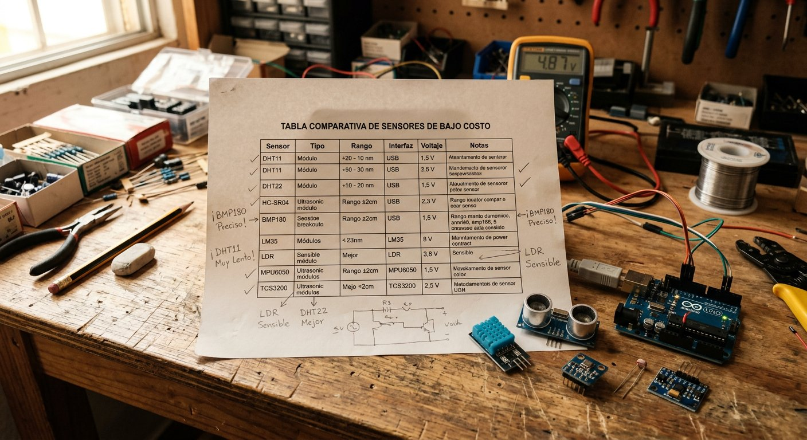

Qué cubre esta guía
- Qué es un sensor y cómo elegir el correcto
- Tipos de sensores: digitales, analógicos y de bus
- Tabla comparativa de los sensores esenciales
- Leer un sensor: digitalRead y analogRead
- Alimentación, ruido y estabilidad de lecturas
- Comunicación: I2C, SPI y UART
- Proyecto: mini centro de sensores
- Problemas comunes y soluciones
- Preguntas frecuentes
Qué es un sensor y cómo elegir el correcto
Un sensor es un dispositivo que convierte una magnitud física del mundo real —distancia, temperatura, luz, movimiento, gas— en una señal eléctrica que el Arduino puede leer. Sin sensores, un Arduino es solo una placa que ejecuta instrucciones a ciegas; con ellos, se convierte en un sistema capaz de percibir y reaccionar a su entorno, que es exactamente la frontera entre un circuito y un robot.
Para elegir el sensor correcto conviene responder cuatro preguntas en orden:
- ¿Qué magnitud necesito medir? distancia, temperatura y humedad, posición de una línea, presencia de gas o movimiento humano.
- ¿Qué tipo de salida entrega? digital (sí/no), analógica (rango continuo) o de bus (I2C/SPI con datos más ricos).
- ¿Qué rango y precisión exige el proyecto? un DHT11 mide menos preciso que un DHT22; un sensor de ultrasonido barato pierde fiabilidad a menos de 2 cm.
- ¿Qué tan fácil es de usar con Arduino? los módulos con pines VCC/GND/OUT y librerías maduras se integran en minutos; los sensores desnudos exigen más electrónica auxiliar.
Tipos de sensores: digitales, analógicos y de bus
Según el tipo de señal que entregan, los sensores se dividen en tres grandes familias, y conocer la diferencia evita la mitad de los errores de conexión:
- Digitales (sí/no): entregan un estado alto o bajo. Ejemplos: el pin OUT de un módulo PIR (movimiento detectado o no), el pin DO de un detector de gas con comparador, un pulsador o un sensor de línea digital. Se leen con
digitalRead(). - Analógicos (cuánto): entregan un rango continuo de voltaje proporcional a la magnitud medida. Ejemplos: la salida AO de un MQ-2, un potenciómetro, un sensor de luz LDR. Se leen con
analogRead(), que devuelve de 0 a 1023 en un Arduino de 10 bits. - De bus (datos estructurados): se comunican por protocolos como I2C o SPI y entregan valores ya procesados, a menudo con varias magnitudes a la vez. Ejemplos: el DHT22 (temperatura y humedad), el MPU6050 (acelerómetro y giroscopio), el BMP280 (presión y altitud). Requieren una librería.
Tabla comparativa de los sensores esenciales
| Sensor | Mide | Salida | Ideal para | Guía dedicada |
|---|---|---|---|---|
| Ultrasónico HC-SR04 | Distancia (2–400 cm) | Digital (TRIG/ECHO) | Robots evasores, radares, medición | HC-SR04 paso a paso |
| DHT22 | Temperatura y humedad | Bus (un solo pin) | Estaciones meteorológicas, invernaderos | DHT22 con Arduino |
| Infrarrojo TCRT5000 | Reflexión de luz IR | Analógica y/o digital | Robots siguelíneas, detección de obstáculos | Sensores infrarrojos |
| Gas MQ-2 | Gases combustibles y humo | Analógica y digital | Alarmas de gas y seguridad | Detector de gas MQ-2 |
| PIR HC-SR501 | Movimiento humano | Digital | Alarmas y luces automáticas | Sensor PIR de movimiento |
Cada uno de estos cinco sensores tiene una guía técnica dedicada en este sitio, enlazada en la tabla. Si recién empiezas, esta guía de primeros pasos con Arduino te deja listo para conectarlos.
Leer un sensor: digitalRead y analogRead
La lectura de un sensor se reduce a dos funciones básicas del lenguaje Arduino, que conviene entender a fondo antes de depender de librerías:
const int PIN_SENSOR_DIGITAL = 2; // pin de un sensor digital
const int PIN_SENSOR_ANALOGO = A0; // pin de un sensor analogico
void setup() {
pinMode(PIN_SENSOR_DIGITAL, INPUT); // pin digital como entrada
Serial.begin(9600); // para ver los valores en pantalla
}
void loop() {
int estado = digitalRead(PIN_SENSOR_DIGITAL); // devuelve HIGH o LOW
int valor = analogRead(PIN_SENSOR_ANALOGO); // devuelve 0 a 1023
Serial.print("Digital: ");
Serial.print(estado);
Serial.print(" | Analogico: ");
Serial.println(valor);
delay(200);
}digitalRead() devuelve HIGH o LOW según el voltaje en el pin, y es la forma de leer pulsadores, finales de carrera y salidas digitales de módulos. analogRead() convierte el voltaje (0–5V) en un número de 0 a 1023, y es la puerta de entrada a cualquier magnitud continua. El monitor serie (Serial.println) es tu mejor herramienta de depuración: antes de programar el comportamiento final, verifica siempre que el sensor entrega valores coherentes.
Alimentación, ruido y estabilidad de lecturas
La causa más común de lecturas erráticas no es el sensor, sino la alimentación ruidosa. Cuando un motor o un servo comparte el mismo riel de 5V que el sensor, cada arranque del motor produce caídas de voltaje que el sensor interpreta como cambios reales de la magnitud medida.
- Usa 5V estable: alimenta la lógica con la salida de 5V del Arduino o una fuente regulada, y reserva una fuente aparte para motores y servos de potencia.
- Cables cortos y ordenados: los cables largos actúan como antenas que captan interferencia; mantenlos cortos y alejados de motores y del cable de red.
- Condensador de desacople: un condensador electrolítico de 100 µF entre VCC y GND cerca del sensor suaviza los picos de voltaje.
- Filtrado en software: promedia o toma la mediana de varias lecturas para eliminar picos aislados, técnica que se detalla en la guía del sensor ultrasónico.
Comunicación: I2C, SPI y UART
Los sensores más avanzados no entregan un simple voltaje, sino datos digitales por un protocolo de comunicación. Conocer los tres principales te permite conectar cualquier sensor que encuentres:
| Protocolo | Pines típicos (Uno) | Características | Ejemplos |
|---|---|---|---|
| I2C | SDA (A4), SCL (A5) | Dos hilos, varios dispositivos por dirección | Pantallas OLED, MPU6050, BMP280 |
| SPI | MOSI (11), MISO (12), SCK (13), SS | Rápido, un hilo por dato | Tarjetas SD, pantallas TFT |
| UART / Serial | RX (0), TX (1) | Comunicación punto a punto | Módulos Bluetooth HC-05, GPS |
Cada protocolo tiene su librería en el gestor de librerías del IDE de Arduino, y casi todos los módulos traen ejemplos listos. La clave es identificar qué protocolo usa el sensor por su hoja de datos y conectar los pines exactos, ya que un pin equivocado en I2C o SPI es la causa más frecuente de "el sensor no aparece".
Proyecto: mini centro de sensores
Una excelente forma de consolidar todo lo anterior es montar un mini centro de sensores que combine una lectura digital, una analógica y una de bus en un solo sketch. El ejemplo lee un botón (digital), un potenciómetro (analógico) y muestra todo por el monitor serie:
const int PIN_BOTON = 2; // sensor digital
const int PIN_POT = A0; // sensor analogico
void setup() {
pinMode(PIN_BOTON, INPUT);
Serial.begin(9600);
}
void loop() {
bool botonPresionado = digitalRead(PIN_BOTON);
int nivelPot = analogRead(PIN_POT);
Serial.print("Boton: ");
Serial.print(botonPresionado ? "presionado" : "libre");
Serial.print(" | Potenciometro: ");
Serial.println(nivelPot);
// Accion de ejemplo: si el potenciometro supera la mitad, encender
// un LED en el pin 13 (proporcional a la lectura).
analogWrite(13, nivelPot / 4); // escala 0-1023 a 0-255 (PWM)
delay(100);
}Este patrón —leer, decidir, actuar— es el esqueleto de cualquier proyecto con sensores, desde un semáforo hasta un robot completo. Cuando lo domines, cada una de las guías dedicadas de la tabla te mostrará la profundidad específica de cada sensor.
Problemas comunes y soluciones
| Síntoma | Causa probable | Solución |
|---|---|---|
| El sensor no entrega ningún valor | Alimentación mal conectada o módulo dañado | Verificar VCC y GND, medir voltaje con multímetro |
| Valores erráticos o con picos | Ruido de alimentación o cables largos | Condensador de 100 µF, cables cortos, filtrar en software |
| Lecturas siempre en 0 o 1023 | Pin analógico equivocado o sensor desconectado | Verificar que se usa un pin A0–A5 y la continuidad del cable |
| El sensor de bus no aparece | Pines SDA/SCL equivocados o dirección incorrecta | Revisar el cableado I2C y la dirección con un escáner I2C |
| El sensor funciona a ratos | Falso contacto en la protoboard | Reasentar cables y preferir soldadura en proyectos definitivos |
Conclusión
Los sensores son el puente entre el código y el mundo físico, y dominar su selección, conexión y lectura es la habilidad que convierte un proyecto de Arduino en un robot que percibe y decide. Empieza por entender la diferencia entre digital y analógico, alimenta con voltaje estable, filtra el ruido y verifica siempre con el monitor serie antes de programar el comportamiento final. Desde aquí, el camino natural es la guía del sensor ultrasónico HC-SR04, el sensor más versátil para empezar.
Preguntas frecuentes
¿Cuál es la diferencia entre un sensor digital y uno analógico?
Un sensor digital entrega únicamente dos estados posibles —alto o bajo, 0 o 1—, como un pulsador, un sensor de línea o el pin OUT de un módulo PIR o de un detector de gas con comparador. Un sensor analógico entrega un rango continuo de valores que se lee con analogRead(), típicamente entre 0 y 1023 en un Arduino de 10 bits, lo que permite medir magnitudes graduales como la intensidad de luz, la temperatura o la concentración de gas. La regla práctica: si necesitas saber "sí o no", un sensor digital alcanza; si necesitas saber "cuánto", usa un sensor analógico.
¿Cómo sé qué sensor elegir para mi proyecto?
Elige el sensor según la magnitud física que necesitas medir (distancia, temperatura, movimiento, gas, luz), el tipo de salida que entrega (digital, analógica o de bus I2C/SPI), el rango de medición y la precisión que exige el proyecto, y la facilidad de uso con Arduino (que exista librería y documentación). Para empezar conviene priorizar sensores de módulos con pines VCC/GND/OUT, que se conectan en minutos, y dejar los sensores de bus como DHT22 o MPU6050 para cuando se domine la lectura básica. La tabla comparativa de esta guía resume los cinco sensores esenciales para empezar.
¿Por qué mis lecturas de sensores tienen valores erráticos o ruido?
Las lecturas erráticas suelen tener tres causas: alimentación inestable o ruidosa (motores y servos conectados al mismo riel generan caídas de voltaje), cables sueltos o demasiado largos que actúan como antenas, y ausencia de filtrado en el software. Las soluciones son alimentar los sensores con un 5V estable, mantener los cables cortos y separados de los motores, agregar un condensador de 100 µF cerca del sensor, y promediar o tomar la mediana de varias lecturas en el código para eliminar picos aislados.
¿Puedo conectar varios sensores al mismo Arduino?
Sí, un Arduino Uno puede manejar varios sensores simultáneamente siempre que los repartas entre sus pines disponibles y vigiles el consumo total de corriente. Los sensores simples comparten los rieles de 5V y GND, y cada uno usa su propio pin de datos digital o analógico. Los sensores de bus I2C pueden compartir los mismos dos pines (SDA y SCL) usando direcciones distintas. La limitación real no es la cantidad de pines sino la corriente que puede entregar el regulador del Arduino; si superas unos 400-500 mA, conviene alimentar los sensores con una fuente externa.
¿Qué sensores debería comprar primero para aprender?
Un set inicial recomendado incluye: un sensor ultrasónico HC-SR04 (distancia), un sensor de temperatura y humedad DHT22, un par de sensores infrarrojos TCRT5000 (para robots siguelíneas), un sensor de gas MQ-2 y un sensor PIR de movimiento. Cubren los cinco tipos de medición más comunes en proyectos escolares y de robótica, son baratos, tienen abundante documentación y cada uno tiene una guía dedicada en este sitio. Con esos cinco puedes abordar la mayoría de los proyectos de iniciación e intermedios.
Este artículo es contenido editorial independiente: no contiene ubicaciones patrocinadas ni enlaces de afiliado. Si en futuras actualizaciones se agregan enlaces a proveedores de componentes, serán identificados explícitamente. El código y las conexiones son referenciales y deben adaptarse y probarse con tu propio hardware. Si detectas un error en esta guía, por favor avísanos.
Sigue aprendiendo
Ya sabes elegir y leer sensores: ahora profundiza en el más versátil de todos con la Guía del Sensor Ultrasónico HC-SR04, o construye un proyecto completo con la Estación Meteorológica con Arduino y Pantalla OLED.
Fuentes primarias y lecturas recomendadas
Estas referencias sustentan los conceptos generales de la guía. Los rangos exactos de cada sensor varían según el fabricante.
- Arduino Reference — digitalRead()
- Arduino Reference — analogRead()
- Arduino Reference — Librería Wire (I2C)
- All About Circuits — Referencia técnica de electrónica básica
Enlaces revisados: 13 de agosto de 2026.